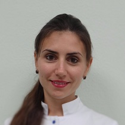

Алексійчук Ірина Юріївна, практикуючий лікар стоматолог-терапевт, стоматолог-хірург, стоматолог-гігієніст, лікар пародонтолог, дитячий лікар. Здійснює прийом пацієнтів у стоматологічному центрі "Святодент".
З 2003 по 2008 навчалась в НМУ імені О.О.Богомольця. У 2012 - отримала спеціалізацію "Терапевтична стоматологія" на базі Військово-медичної академії. В грудні 2015 вступила на заочну аспірантуру Київського медичного університету УАНМ на кафедру терапевтичної стоматології.
Натисніть щоб дізнатись про курси...
Прослухані курси:

Натисніть на зображення щоб збільшити його
| Графік прийому | |
|---|---|
| з понеділка по четвер | |
| парні | з 09:00 до 14:00 |
| непарні | з 14:00 до 20:00 |
| у п'ятницю | |
| парні | з 09:00 до 14:00 |
| непарні | вихідний |
| у суботу | |
| чергування* | з 09:00 до 14:00 |
| * - дати уточнюйте в адміністратора | |